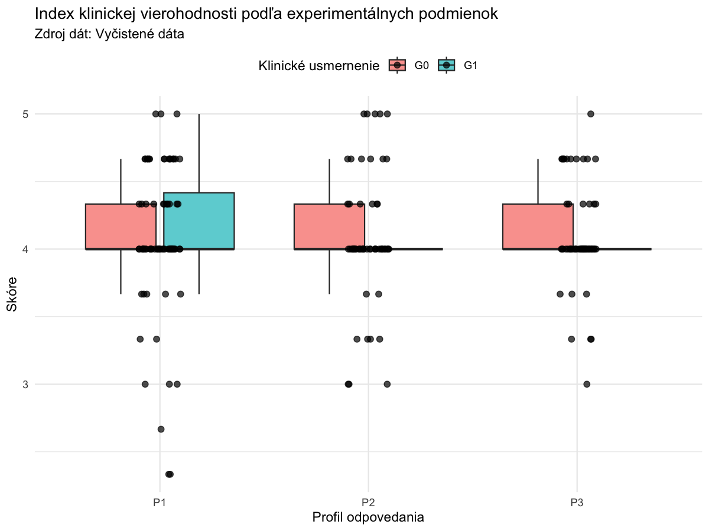
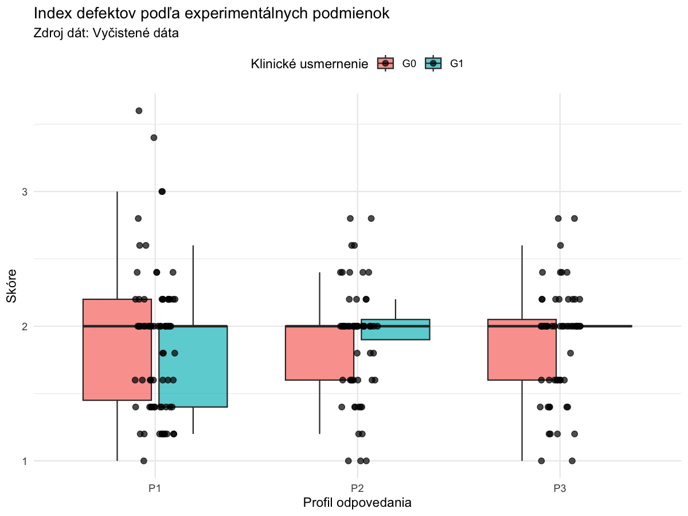
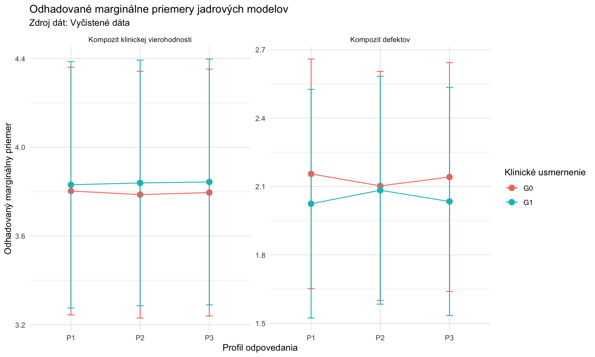

Štýl je nastavený podľa lokálneho sprievodcu: číslo nad objektom tučne, názov na ďalšom riadku kurzívou, bez zvislých čiar a s horizontálnymi oddeľovačmi.
Tabuľka 1
Základná charakteristika súboru hodnotení
| Ukazovateľ | Hodnota |
|---|---|
| Zdroj dát | Vyčistené dáta |
| Počet hodnotiteľov | 6 |
| Počet prepisov rozhovorov | 72 |
| Počet seedov | 12 |
| Počet hodnotení | 199 |
| Priemerný počet hodnotení na prepis rozhovoru | 2.76388888888889 |
| Minimálny počet hodnotení na prepis rozhovoru | 2 |
| Maximálny počet hodnotení na prepis rozhovoru | 6 |
| Spôsob výpočtu chyby závažnosti | Priama absolútna chyba na škále 1-5 |
| Počet hodnotení v G0 | 118 |
| Počet hodnotení v G1 | 81 |
| Počet hodnotení pre P1 | 78 |
| Počet hodnotení pre P2 | 60 |
| Počet hodnotení pre P3 | 61 |
| G0 × P1 | 46 |
| G0 × P2 | 36 |
| G0 × P3 | 36 |
| G1 × P1 | 32 |
| G1 × P2 | 24 |
| G1 × P3 | 25 |
Poznámka. Zdroj dát: Vyčistené dáta
Tabuľka 2
Deskriptívne ukazovatele položiek a kompozitov
| Premenná | n | Počet použitých kategórií | Medián | IQR | Priemer | SD | Min | Max | Analytická úroveň | Sekcia |
|---|---|---|---|---|---|---|---|---|---|---|
| Klinická vierohodnosť rozhovoru | 199 | 5 | 4 | 0 | 4.075 | 0.602 | 1 | 5 | hodnotenie | Položky |
| Prirodzenosť jazyka a štýlu odpovedí | 199 | 5 | 4 | 0 | 3.92 | 0.684 | 1 | 5 | hodnotenie | Položky |
| Vnútorná konzistentnosť rozhovoru | 199 | 4 | 4 | 1 | 4.201 | 0.568 | 2 | 5 | hodnotenie | Položky |
| Súlad rozhovoru s obrazom depresívnej symptomatiky | 199 | 4 | 4 | 0 | 3.97 | 0.521 | 2 | 5 | hodnotenie | Položky |
| Použiteľnosť rozhovoru na tréningové / výučbové účely | 199 | 5 | 4 | 0 | 3.95 | 0.839 | 1 | 5 | hodnotenie | Položky |
| Istota odhadu pôvodu | 58 | 4 | 2 | 1 | 2.569 | 0.704 | 2 | 5 | hodnotenie | Položky |
| Prítomnosť vnútorných kontradikcií v rozhovore | 199 | 4 | 2 | 0 | 1.95 | 0.548 | 1 | 4 | hodnotenie | Položky |
| Klišé alebo šablónovité odpovede | 199 | 5 | 2 | 0 | 2.04 | 0.688 | 1 | 5 | hodnotenie | Položky |
| Nesúlad medzi kontextom a symptomatikou | 199 | 4 | 2 | 1 | 1.839 | 0.714 | 1 | 4 | hodnotenie | Položky |
| Podozrenie na inú primárnu psychopatológiu | 199 | 5 | 2 | 0 | 2.07 | 0.714 | 1 | 5 | hodnotenie | Položky |
| Neprimeraná dramatizácia alebo neprirodzená expresivita | 199 | 4 | 2 | 1 | 1.558 | 0.555 | 1 | 4 | hodnotenie | Položky |
| Ľudský odhad celkovej závažnosti depresívnej symptomatiky | 199 | 5 | 3 | 0 | 2.93 | 0.685 | 1 | 5 | hodnotenie | Položky |
| Ľudský odhad funkčného dopadu na bežné fungovanie | 199 | 4 | 3 | 0 | 2.955 | 0.654 | 2 | 5 | hodnotenie | Položky |
| PHQ-9 symptomatické metadata: depresívna nálada | 72 | 2 | 2 | 1 | 2.333 | 0.475 | 2 | 3 | prepis rozhovoru | Položky |
| PHQ-9 symptomatické metadata: strata záujmu / anhedónia | 72 | 2 | 2.5 | 1 | 2.5 | 0.504 | 2 | 3 | prepis rozhovoru | Položky |
| PHQ-9 symptomatické metadata: poruchy spánku | 72 | 3 | 3 | 0 | 2.722 | 0.61 | 1 | 3 | prepis rozhovoru | Položky |
| PHQ-9 symptomatické metadata: zmeny apetítu / hmotnosti | 72 | 3 | 1 | 2 | 1.153 | 0.816 | 0 | 2 | prepis rozhovoru | Položky |
| PHQ-9 symptomatické metadata: psychomotorické spomalenie alebo nepokoj | 72 | 2 | 2 | 1 | 1.597 | 0.494 | 1 | 2 | prepis rozhovoru | Položky |
| PHQ-9 symptomatické metadata: únava / nízka energia | 72 | 2 | 3 | 0 | 2.903 | 0.298 | 2 | 3 | prepis rozhovoru | Položky |
| PHQ-9 symptomatické metadata: pocity viny / bezcennosti | 72 | 4 | 2 | 0.25 | 1.778 | 0.587 | 0 | 3 | prepis rozhovoru | Položky |
| PHQ-9 symptomatické metadata: zhoršená koncentrácia / rozhodovanie | 72 | 3 | 2 | 0 | 1.931 | 0.454 | 1 | 3 | prepis rozhovoru | Položky |
| PHQ-9 symptomatické metadata: pasívne myšlienky na smrť | 72 | 2 | 0 | 1 | 0.417 | 0.496 | 0 | 1 | prepis rozhovoru | Položky |
| Kompozit defektov | 199 | 2 | 0.6 | 1.891 | 0.454 | 1 | 3.6 | hodnotenie | Kompozity | |
| Kompozit klinickej vierohodnosti | 199 | 4 | 0.333 | 4.082 | 0.468 | 2.333 | 5 | hodnotenie | Kompozity | |
| Absolútna chyba S2 voči seedu | 72 | 0.5 | 0.333 | 0.476 | 0.301 | 0 | 1 | prepis rozhovoru | Kompozity | |
| Absolútna chyba S1 voči seedu | 72 | 0.333 | 0.333 | 0.432 | 0.292 | 0 | 1 | prepis rozhovoru | Kompozity | |
| Priemerná absolútna chyba v symptomatických doménach A1-A9 voči seedu | 72 | 0.556 | 0.333 | 0.531 | 0.198 | 0.111 | 0.889 | prepis rozhovoru | Kompozity |
Poznámka. Export spája deskriptíva na úrovni položiek a kompozitov do jedného prehľadu pripraveného pre rukopis.
Tabuľka 3
Frekvenčné rozdelenie kľúčových položiek
| Premenná | Odpoveď | Počet | Podiel |
|---|---|---|---|
| Klinická vierohodnosť rozhovoru | 1 | 1 | 0.005 |
| Klinická vierohodnosť rozhovoru | 2 | 3 | 0.015 |
| Klinická vierohodnosť rozhovoru | 3 | 14 | 0.07 |
| Klinická vierohodnosť rozhovoru | 4 | 143 | 0.719 |
| Klinická vierohodnosť rozhovoru | 5 | 38 | 0.191 |
| Prirodzenosť jazyka a štýlu odpovedí | 1 | 1 | 0.005 |
| Prirodzenosť jazyka a štýlu odpovedí | 2 | 13 | 0.065 |
| Prirodzenosť jazyka a štýlu odpovedí | 3 | 10 | 0.05 |
| Prirodzenosť jazyka a štýlu odpovedí | 4 | 152 | 0.764 |
| Prirodzenosť jazyka a štýlu odpovedí | 5 | 23 | 0.116 |
| Vnútorná konzistentnosť rozhovoru | 2 | 2 | 0.01 |
| Vnútorná konzistentnosť rozhovoru | 3 | 10 | 0.05 |
| Vnútorná konzistentnosť rozhovoru | 4 | 133 | 0.668 |
| Vnútorná konzistentnosť rozhovoru | 5 | 54 | 0.271 |
| Súlad rozhovoru s obrazom depresívnej symptomatiky | 2 | 4 | 0.02 |
| Súlad rozhovoru s obrazom depresívnej symptomatiky | 3 | 18 | 0.09 |
| Súlad rozhovoru s obrazom depresívnej symptomatiky | 4 | 157 | 0.789 |
| Súlad rozhovoru s obrazom depresívnej symptomatiky | 5 | 20 | 0.101 |
| Použiteľnosť rozhovoru na tréningové / výučbové účely | 1 | 1 | 0.005 |
| Použiteľnosť rozhovoru na tréningové / výučbové účely | 2 | 18 | 0.09 |
| Použiteľnosť rozhovoru na tréningové / výučbové účely | 3 | 15 | 0.075 |
| Použiteľnosť rozhovoru na tréningové / výučbové účely | 4 | 121 | 0.608 |
| Použiteľnosť rozhovoru na tréningové / výučbové účely | 5 | 44 | 0.221 |
| Prítomnosť vnútorných kontradikcií v rozhovore | 1 | 31 | 0.156 |
| Prítomnosť vnútorných kontradikcií v rozhovore | 2 | 151 | 0.759 |
| Prítomnosť vnútorných kontradikcií v rozhovore | 3 | 13 | 0.065 |
| Prítomnosť vnútorných kontradikcií v rozhovore | 4 | 4 | 0.02 |
| Klišé alebo šablónovité odpovede | 1 | 31 | 0.156 |
| Klišé alebo šablónovité odpovede | 2 | 140 | 0.704 |
| Klišé alebo šablónovité odpovede | 3 | 18 | 0.09 |
| Klišé alebo šablónovité odpovede | 4 | 9 | 0.045 |
| Klišé alebo šablónovité odpovede | 5 | 1 | 0.005 |
| Nesúlad medzi kontextom a symptomatikou | 1 | 60 | 0.302 |
| Nesúlad medzi kontextom a symptomatikou | 2 | 120 | 0.603 |
| Nesúlad medzi kontextom a symptomatikou | 3 | 10 | 0.05 |
| Nesúlad medzi kontextom a symptomatikou | 4 | 9 | 0.045 |
| Podozrenie na inú primárnu psychopatológiu | 1 | 31 | 0.156 |
| Podozrenie na inú primárnu psychopatológiu | 2 | 135 | 0.678 |
| Podozrenie na inú primárnu psychopatológiu | 3 | 22 | 0.111 |
| Podozrenie na inú primárnu psychopatológiu | 4 | 10 | 0.05 |
| Podozrenie na inú primárnu psychopatológiu | 5 | 1 | 0.005 |
| Neprimeraná dramatizácia alebo neprirodzená expresivita | 1 | 93 | 0.467 |
| Neprimeraná dramatizácia alebo neprirodzená expresivita | 2 | 102 | 0.513 |
| Neprimeraná dramatizácia alebo neprirodzená expresivita | 3 | 3 | 0.015 |
| Neprimeraná dramatizácia alebo neprirodzená expresivita | 4 | 1 | 0.005 |
| Ľudský odhad celkovej závažnosti depresívnej symptomatiky | 1 | 1 | 0.005 |
| Ľudský odhad celkovej závažnosti depresívnej symptomatiky | 2 | 48 | 0.241 |
| Ľudský odhad celkovej závažnosti depresívnej symptomatiky | 3 | 117 | 0.588 |
| Ľudský odhad celkovej závažnosti depresívnej symptomatiky | 4 | 30 | 0.151 |
| Ľudský odhad celkovej závažnosti depresívnej symptomatiky | 5 | 3 | 0.015 |
| Ľudský odhad funkčného dopadu na bežné fungovanie | 2 | 43 | 0.216 |
| Ľudský odhad funkčného dopadu na bežné fungovanie | 3 | 126 | 0.633 |
| Ľudský odhad funkčného dopadu na bežné fungovanie | 4 | 26 | 0.131 |
| Ľudský odhad funkčného dopadu na bežné fungovanie | 5 | 4 | 0.02 |
Poznámka. Určené najmä pre G1 až G5, S1, S2 a R1 až R5; pri finálnom reporte sa dá podľa potreby zúžiť.
Tabuľka 4
Vnútorná konzistencia hodnotiacich blokov
| Blok | Počet položiek | Počet riadkov | alpha | omega | Stav | Poznámka |
|---|---|---|---|---|---|---|
| Blok G1-G5 | 5 | 199 | 0.843 | 0.854 | ok | |
| Jadro indexu klinickej vierohodnosti | 3 | 199 | 0.772 | 0.779 | ok | |
| Blok R1-R5 | 5 | 199 | 0.741 | 0.76 | ok |
Tabuľka 5
Zhoda medzi hodnotiteľmi pri hlavných výstupných ukazovateľoch
| Ukazovateľ | Typ ICC | Odhad | 95 % CI dolná | 95 % CI horná | Stav | Poznámka |
|---|---|---|---|---|---|---|
| Kompozit klinickej vierohodnosti | ICC2k | ok | ||||
| Kompozit defektov | ICC2k | ok | ||||
| Ľudský odhad celkovej závažnosti depresívnej symptomatiky | ICC2k | ok | ||||
| Ľudský odhad funkčného dopadu na bežné fungovanie | ICC2k | ok |
Tabuľka 6
Súhrn jadrových zmiešaných modelov
| Ukazovateľ | Typ modelu | Term | Odhad | SE | Testová štatistika | p | 95 % CI dolná | 95 % CI horná | Stav | Poznámka | Model |
|---|---|---|---|---|---|---|---|---|---|---|---|
| Kompozit klinickej vierohodnosti | LMM | Intercept (referenčná kombinácia G0 × P1) | 3.803 | 0.206 | 18.434 | 0 | 3.399 | 4.207 | ok | p_value from lmerTest Satterthwaite approximation. | LMM |
| Kompozit klinickej vierohodnosti | LMM | Hlavný efekt klinického usmernenia G1 (vs. G0) | 0.028 | 0.093 | 0.304 | 0.762 | -0.154 | 0.211 | ok | p_value from lmerTest Satterthwaite approximation. | LMM |
| Kompozit klinickej vierohodnosti | LMM | Hlavný efekt P2 (vs. P1) | -0.016 | 0.09 | -0.18 | 0.858 | -0.193 | 0.16 | ok | p_value from lmerTest Satterthwaite approximation. | LMM |
| Kompozit klinickej vierohodnosti | LMM | Hlavný efekt P3 (vs. P1) | -0.007 | 0.09 | -0.077 | 0.939 | -0.183 | 0.17 | ok | p_value from lmerTest Satterthwaite approximation. | LMM |
| Kompozit klinickej vierohodnosti | LMM | Interakcia klinického usmernenia G1 × P2 | 0.024 | 0.138 | 0.175 | 0.861 | -0.247 | 0.296 | ok | p_value from lmerTest Satterthwaite approximation. | LMM |
| Kompozit klinickej vierohodnosti | LMM | Interakcia klinického usmernenia G1 × P3 | 0.019 | 0.137 | 0.142 | 0.887 | -0.25 | 0.289 | ok | p_value from lmerTest Satterthwaite approximation. | LMM |
| Kompozit defektov | LMM | Intercept (referenčná kombinácia G0 × P1) | 2.155 | 0.185 | 11.633 | 0 | 1.792 | 2.519 | ok | p_value from lmerTest Satterthwaite approximation. | LMM |
| Kompozit defektov | LMM | Hlavný efekt klinického usmernenia G1 (vs. G0) | -0.131 | 0.089 | -1.475 | 0.142 | -0.305 | 0.043 | ok | p_value from lmerTest Satterthwaite approximation. | LMM |
| Kompozit defektov | LMM | Hlavný efekt P2 (vs. P1) | -0.053 | 0.086 | -0.615 | 0.54 | -0.221 | 0.115 | ok | p_value from lmerTest Satterthwaite approximation. | LMM |
| Kompozit defektov | LMM | Hlavný efekt P3 (vs. P1) | -0.014 | 0.086 | -0.161 | 0.872 | -0.182 | 0.154 | ok | p_value from lmerTest Satterthwaite approximation. | LMM |
| Kompozit defektov | LMM | Interakcia klinického usmernenia G1 × P2 | 0.112 | 0.132 | 0.846 | 0.398 | -0.147 | 0.371 | ok | p_value from lmerTest Satterthwaite approximation. | LMM |
| Kompozit defektov | LMM | Interakcia klinického usmernenia G1 × P3 | 0.024 | 0.131 | 0.18 | 0.857 | -0.233 | 0.28 | ok | p_value from lmerTest Satterthwaite approximation. | LMM |
| Priemerná absolútna chyba v symptomatických doménach A1-A9 voči seedu | LMM (úroveň prepisu rozhovoru) | Intercept (referenčná kombinácia G0 × P1) | 0.537 | 0.055 | 9.716 | 0 | 0.429 | 0.645 | ok | p_value from lmerTest Satterthwaite approximation. | LMM |
| Priemerná absolútna chyba v symptomatických doménach A1-A9 voči seedu | LMM (úroveň prepisu rozhovoru) | Hlavný efekt klinického usmernenia G1 (vs. G0) | -0.019 | 0.044 | -0.416 | 0.679 | -0.106 | 0.069 | ok | p_value from lmerTest Satterthwaite approximation. | LMM |
| Priemerná absolútna chyba v symptomatických doménach A1-A9 voči seedu | LMM (úroveň prepisu rozhovoru) | Hlavný efekt P2 (vs. P1) | -0.046 | 0.044 | -1.041 | 0.302 | -0.133 | 0.041 | ok | p_value from lmerTest Satterthwaite approximation. | LMM |
| Priemerná absolútna chyba v symptomatických doménach A1-A9 voči seedu | LMM (úroveň prepisu rozhovoru) | Hlavný efekt P3 (vs. P1) | 0.056 | 0.044 | 1.249 | 0.217 | -0.032 | 0.143 | ok | p_value from lmerTest Satterthwaite approximation. | LMM |
| Priemerná absolútna chyba v symptomatických doménach A1-A9 voči seedu | LMM (úroveň prepisu rozhovoru) | Interakcia klinického usmernenia G1 × P2 | 0.102 | 0.063 | 1.619 | 0.111 | -0.021 | 0.225 | ok | p_value from lmerTest Satterthwaite approximation. | LMM |
| Priemerná absolútna chyba v symptomatických doménach A1-A9 voči seedu | LMM (úroveň prepisu rozhovoru) | Interakcia klinického usmernenia G1 × P3 | -0.102 | 0.063 | -1.619 | 0.111 | -0.225 | 0.021 | ok | p_value from lmerTest Satterthwaite approximation. | LMM |
| Absolútna chyba S1 voči seedu | LMM (úroveň prepisu rozhovoru) | Intercept (referenčná kombinácia G0 × P1) | 0.576 | 0.079 | 7.333 | 0 | 0.422 | 0.73 | ok | p_value from lmerTest Satterthwaite approximation. Singular fit detected (tol = 1e-4). Convergence note: boundary (singular) fit: see help('isSingular') | LMM |
| Absolútna chyba S1 voči seedu | LMM (úroveň prepisu rozhovoru) | Hlavný efekt klinického usmernenia G1 (vs. G0) | -0.132 | 0.111 | -1.187 | 0.239 | -0.35 | 0.086 | ok | p_value from lmerTest Satterthwaite approximation. Singular fit detected (tol = 1e-4). Convergence note: boundary (singular) fit: see help('isSingular') | LMM |
| Absolútna chyba S1 voči seedu | LMM (úroveň prepisu rozhovoru) | Hlavný efekt P2 (vs. P1) | -0.132 | 0.111 | -1.187 | 0.239 | -0.35 | 0.086 | ok | p_value from lmerTest Satterthwaite approximation. Singular fit detected (tol = 1e-4). Convergence note: boundary (singular) fit: see help('isSingular') | LMM |
| Absolútna chyba S1 voči seedu | LMM (úroveň prepisu rozhovoru) | Hlavný efekt P3 (vs. P1) | -0.187 | 0.111 | -1.687 | 0.096 | -0.405 | 0.03 | ok | p_value from lmerTest Satterthwaite approximation. Singular fit detected (tol = 1e-4). Convergence note: boundary (singular) fit: see help('isSingular') | LMM |
| Absolútna chyba S1 voči seedu | LMM (úroveň prepisu rozhovoru) | Interakcia klinického usmernenia G1 × P2 | -0.063 | 0.157 | -0.398 | 0.692 | -0.371 | 0.246 | ok | p_value from lmerTest Satterthwaite approximation. Singular fit detected (tol = 1e-4). Convergence note: boundary (singular) fit: see help('isSingular') | LMM |
| Absolútna chyba S1 voči seedu | LMM (úroveň prepisu rozhovoru) | Interakcia klinického usmernenia G1 × P3 | 0.229 | 0.157 | 1.458 | 0.149 | -0.079 | 0.537 | ok | p_value from lmerTest Satterthwaite approximation. Singular fit detected (tol = 1e-4). Convergence note: boundary (singular) fit: see help('isSingular') | LMM |
| Absolútna chyba S2 voči seedu | LMM (úroveň prepisu rozhovoru) | Intercept (referenčná kombinácia G0 × P1) | 0.576 | 0.082 | 7 | 0 | 0.415 | 0.738 | ok | p_value from lmerTest Satterthwaite approximation. | LMM |
| Absolútna chyba S2 voči seedu | LMM (úroveň prepisu rozhovoru) | Hlavný efekt klinického usmernenia G1 (vs. G0) | -0.062 | 0.101 | -0.619 | 0.538 | -0.26 | 0.135 | ok | p_value from lmerTest Satterthwaite approximation. | LMM |
| Absolútna chyba S2 voči seedu | LMM (úroveň prepisu rozhovoru) | Hlavný efekt P2 (vs. P1) | -0.104 | 0.101 | -1.031 | 0.307 | -0.302 | 0.094 | ok | p_value from lmerTest Satterthwaite approximation. | LMM |
| Absolútna chyba S2 voči seedu | LMM (úroveň prepisu rozhovoru) | Hlavný efekt P3 (vs. P1) | -0.049 | 0.101 | -0.481 | 0.632 | -0.247 | 0.149 | ok | p_value from lmerTest Satterthwaite approximation. | LMM |
| Absolútna chyba S2 voči seedu | LMM (úroveň prepisu rozhovoru) | Interakcia klinického usmernenia G1 × P2 | -0.118 | 0.143 | -0.826 | 0.412 | -0.398 | 0.162 | ok | p_value from lmerTest Satterthwaite approximation. | LMM |
| Absolútna chyba S2 voči seedu | LMM (úroveň prepisu rozhovoru) | Interakcia klinického usmernenia G1 × P3 | 0.007 | 0.143 | 0.049 | 0.961 | -0.273 | 0.287 | ok | p_value from lmerTest Satterthwaite approximation. | LMM |
| Prirodzenosť jazyka a štýlu odpovedí | CLMM | Hlavný efekt klinického usmernenia G1 (vs. G0) | -0.056 | 0.611 | -0.092 | 0.927 | -1.254 | 1.141 | ok | Response levels used: 5. | CLMM |
| Prirodzenosť jazyka a štýlu odpovedí | CLMM | Hlavný efekt P2 (vs. P1) | 0.47 | 0.601 | 0.783 | 0.434 | -0.708 | 1.649 | ok | Response levels used: 5. | CLMM |
| Prirodzenosť jazyka a štýlu odpovedí | CLMM | Hlavný efekt P3 (vs. P1) | -0.035 | 0.596 | -0.059 | 0.953 | -1.203 | 1.133 | ok | Response levels used: 5. | CLMM |
| Prirodzenosť jazyka a štýlu odpovedí | CLMM | Interakcia klinického usmernenia G1 × P2 | -0.942 | 0.914 | -1.031 | 0.302 | -2.733 | 0.848 | ok | Response levels used: 5. | CLMM |
| Prirodzenosť jazyka a štýlu odpovedí | CLMM | Interakcia klinického usmernenia G1 × P3 | 0.404 | 0.93 | 0.434 | 0.664 | -1.42 | 2.227 | ok | Response levels used: 5. | CLMM |
| Použiteľnosť rozhovoru na tréningové / výučbové účely | CLMM | Hlavný efekt klinického usmernenia G1 (vs. G0) | 0.314 | 0.57 | 0.551 | 0.581 | -0.803 | 1.432 | ok | Response levels used: 5. | CLMM |
| Použiteľnosť rozhovoru na tréningové / výučbové účely | CLMM | Hlavný efekt P2 (vs. P1) | -0.468 | 0.544 | -0.861 | 0.389 | -1.534 | 0.598 | ok | Response levels used: 5. | CLMM |
| Použiteľnosť rozhovoru na tréningové / výučbové účely | CLMM | Hlavný efekt P3 (vs. P1) | -0.027 | 0.559 | -0.049 | 0.961 | -1.123 | 1.068 | ok | Response levels used: 5. | CLMM |
| Použiteľnosť rozhovoru na tréningové / výučbové účely | CLMM | Interakcia klinického usmernenia G1 × P2 | 0.162 | 0.813 | 0.199 | 0.842 | -1.432 | 1.756 | ok | Response levels used: 5. | CLMM |
| Použiteľnosť rozhovoru na tréningové / výučbové účely | CLMM | Interakcia klinického usmernenia G1 × P3 | 0.344 | 0.829 | 0.415 | 0.678 | -1.281 | 1.968 | ok | Response levels used: 5. | CLMM |
| Ľudský odhad celkovej závažnosti depresívnej symptomatiky | CLMM | Hlavný efekt klinického usmernenia G1 (vs. G0) | -0.17 | 0.573 | -0.297 | 0.767 | -1.293 | 0.953 | ok | Response levels used: 5. | CLMM |
| Ľudský odhad celkovej závažnosti depresívnej symptomatiky | CLMM | Hlavný efekt P2 (vs. P1) | -0.385 | 0.557 | -0.69 | 0.49 | -1.476 | 0.707 | ok | Response levels used: 5. | CLMM |
| Ľudský odhad celkovej závažnosti depresívnej symptomatiky | CLMM | Hlavný efekt P3 (vs. P1) | -0.352 | 0.557 | -0.632 | 0.527 | -1.443 | 0.739 | ok | Response levels used: 5. | CLMM |
| Ľudský odhad celkovej závažnosti depresívnej symptomatiky | CLMM | Interakcia klinického usmernenia G1 × P2 | 1.178 | 0.835 | 1.411 | 0.158 | -0.459 | 2.815 | ok | Response levels used: 5. | CLMM |
| Ľudský odhad celkovej závažnosti depresívnej symptomatiky | CLMM | Interakcia klinického usmernenia G1 × P3 | 1.871 | 0.831 | 2.25 | 0.024 | 0.241 | 3.5 | ok | Response levels used: 5. | CLMM |
| Ľudský odhad funkčného dopadu na bežné fungovanie | CLMM | Hlavný efekt klinického usmernenia G1 (vs. G0) | -0.337 | 0.615 | -0.547 | 0.584 | -1.542 | 0.869 | ok | Response levels used: 4. | CLMM |
| Ľudský odhad funkčného dopadu na bežné fungovanie | CLMM | Hlavný efekt P2 (vs. P1) | -1.257 | 0.641 | -1.961 | 0.05 | -2.514 | 0 | ok | Response levels used: 4. | CLMM |
| Ľudský odhad funkčného dopadu na bežné fungovanie | CLMM | Hlavný efekt P3 (vs. P1) | -1.298 | 0.638 | -2.034 | 0.042 | -2.549 | -0.047 | ok | Response levels used: 4. | CLMM |
| Ľudský odhad funkčného dopadu na bežné fungovanie | CLMM | Interakcia klinického usmernenia G1 × P2 | 0.603 | 0.958 | 0.63 | 0.529 | -1.275 | 2.481 | ok | Response levels used: 4. | CLMM |
| Ľudský odhad funkčného dopadu na bežné fungovanie | CLMM | Interakcia klinického usmernenia G1 × P3 | 1.97 | 0.931 | 2.116 | 0.034 | 0.145 | 3.794 | ok | Response levels used: 4. | CLMM |
Poznámka. V kompaktnej podobe spája LMM a kľúčové CLMM výstupy.
Obrázok 1
Index klinickej vierohodnosti podľa experimentálnych podmienok

Poznámka. Čierne body predstavujú jednotlivé hodnotenia; boxy zobrazujú medián a interkvartilové rozpätie. Vyššie skóre znamená vyššiu klinickú vierohodnosť.
Obrázok 2
Index defektov podľa experimentálnych podmienok

Poznámka. Čierne body predstavujú jednotlivé hodnotenia; boxy zobrazujú medián a interkvartilové rozpätie. Vyššie skóre znamená viac defektov, teda menej priaznivý výsledok.
Obrázok 3
Odhadované marginálne priemery jadrových modelov
